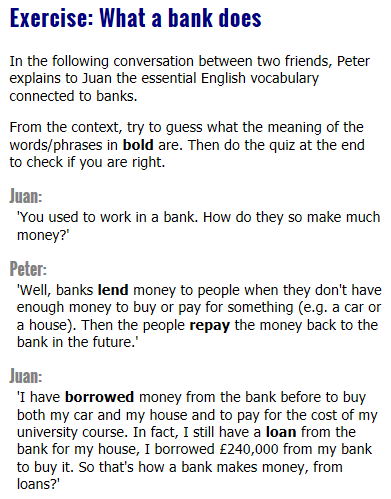
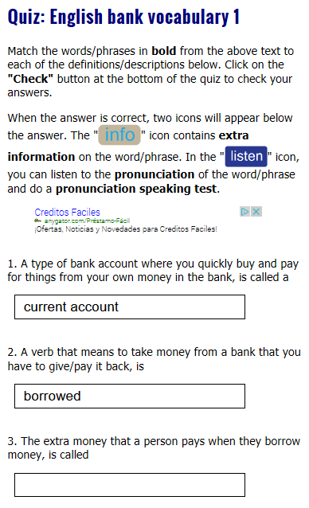

How to do the online exercises
This is short guide on how to do the online vocabulary exercises on Blair English. In addition, it will show you the extra features there are on each exercise (like extra information, word/phrase audio recordings and the pronunciation speaking test) and how to use them.
The Text
Most of the exercises starts with a text (sometimes with an image as well) where some of its vocabulary is highlighted in bold. For example:
These highlighted words/phrases in the text are what you are going to learn. So when you read the text, work out from the context the meaning or use of each.
The Quiz
To make sure that you have worked out the right meaning, each text is followed by a quiz/test. Simply answer each question in the quiz with one of the highlighted words/phrases from the text and press the 'Check' button at the end to see if you are right.
Some of the exercises have a quiz where you have to write the answer yourself in the answer box, while others have a quiz where you select the answer from a list in the answer box.
Extra Information
When an answer is correct, a button/icon called 'info' ( ) will appear under the question after you press the 'Check' button.
) will appear under the question after you press the 'Check' button.
This 'info' box contains more information about the word/phrase you have correctly answered (e.g. extra information, how to use it correctly etc...). The 'info' button/icon also contains a Spanish translation of the word/phrase. For example:

To see the extra information, just click/press the 'info' button/icon.
Listen to the pronunciation
Because we know that pronunciation is one of the most difficult areas of English for learners, in the quiz part of each exercise (apart from emails/letters) you can listen to the pronunciation of each highlighted word/phrase from the text.
To make sure that you understand the meaning of the word/phrase first, you can only listen to the pronunciation when you have correctly placed the word/phrase in the right question in the exercise's quiz and pressed 'Check' at the end of the quiz.
When you do this, a button/icon called 'listen' ( ) will appear under the question. To listen to the pronunciation simply press/click the 'listen' button/icon and below it a box will appear with an audio player. To listen to the pronunciation, press play on the audio player.
) will appear under the question. To listen to the pronunciation simply press/click the 'listen' button/icon and below it a box will appear with an audio player. To listen to the pronunciation, press play on the audio player.
Check your pronunciation
To make sure that you say each word/phrase from the exercises correctly, you should check it. In order to do this I would recommend that you go to the web page of Google Translate or go to the Google Translate App on your mobile phone and practice saying the it by pressing on the microphone icon. Do it until the word/phrase you want to say is written on the screen in text.
That's it
Now you know how to do all the features on the exercises, so please go and start learning some English.
Follow us on